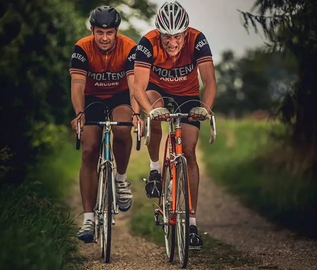
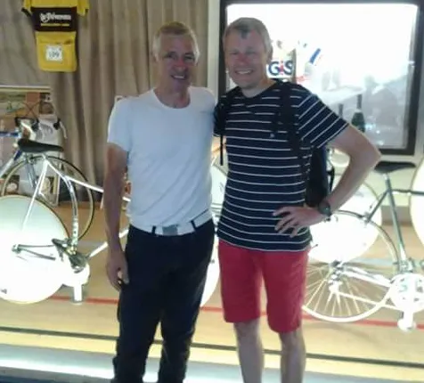

”Det er stadig fedt at mærke suset!”

Tema: Sæsonstart 2019 – Carsten Jacobsen
På det sydlige Fyn er Carsten Jacobsen ved at være klar til sin tredje sæson på Squadra Molteni. Carsten er en af de mest erfarne ryttere på holdet, og en af de helt store livsnydere – både på og af cyklen.
Det er stadig fedt at mærke suset, når jeg sidder i feltet i sidevinden og når jeg har slidt mig op på en alpetinde og blæser ned gennem hålnålesvingene til en ventende espresso nede i dalen, lyder det fra Carsten, der netop er ved at skifte kuglelejer og smøre det gamle Campagnolo Nuovo Record nav.
Carstens fascination af cykelsporten startede, da han var 5-6 år gammel. Carstens far kom en dag hjem fra arbejde med en cykel over skulderen og satte den foran ham med ordene: ”Så skal vi ud at cykle knægt!”
Efter en time med det obligatoriske kosteskaft bag sadlen var jeg klar som cykelist. Jeg hang på cyklen hver dag – og har hængt der siden, afslører Carsten
Der gik ikke mange år før Carsten var klar som cykelrytter. De små kapløb på villavejene blev skiftet ud med licens, blomster og pokal.
Vi var nogle gutter som lå og cyklede om kap, og vi kontaktede en klub i nærheden. Det var KCK, Københavns Cykle Klub, en af de gamle traditionsrige klubber i København. Mine kammerater forsvandt hurtigt, men jeg blev hængende og blev ”rigtig” cykelrytter, fortæller Carsten.
Jeg startede i junior klassen og blev pivet af, før vi nåede ud af skolegården hver søndag, men blev ved og året efter, som senior i D-klassen, fandt jeg pludselig mig selv på øverste trin på skamlen med blomster og pokal, som vinder af Brøndbys CC’s løb. Det var fedt! Der kom suset, som jeg stadig søger.


Carsten kørte licensløb i 6 år, fra 1975-1980. Kørte fra junior til B-klassen med løb over det meste af Europa. Han har bla. har jeg kørt Tour of Ireland nogle gange sammen med Per Sandahl, der nu også kører for Squadra Molteni.
Omkring år 2000 startede Carsten igen op som motionsrytter og kørte også nogle år som licensrytter i H50 – inden han startede på staal og i uld på Squadra Molteni.
Jeg læste om holdet på Facebook og syntes, at det var fedt, at nogen hyldede historien, nostalgien og skildte sig ud fra mainstream carbon-lycra bølgen. Her fandt jeg sjove og herlige nørder med en fed humor og en bredt favnende kultur, hvor det vigtige er at være sammen om de gamle cykler, cykelhistorien og fællesskabet, og hvor det ikke er helt så vigtigt, hvor hurtigt man kører. Og så er det jo også hyggeligt at drikke nogle sorte belgiske øl, griner Carsten.
Carstens Eddy Merckx Molteni er købt af Lars Ingemann. Rammen er en Benotto bygget af De Rosa på licens ca 1976-77. Bygget op med Campa NR og SR. Styr og frempind er Cinelli.

Carstens Sæson starter i år med Ronde van Borum, og derefter går det slag i slag i april og maj med bla. Fleche Vejllone og GP Vejle Ådal, inden det nye løb på kalenderen Crono Vintage Syd Fyn sidst i maj, som han er medarrangører af.
Det bliver sjovt at komme i gang igen efter en lang vinter. I sommerferien drager fruen og jeg endnu en gang til Dolomitterne, hvor jeg har en plan om at besejre Stelvio og Monte Bondone ved Trento, begge mytiske stigninger i Giroen.

